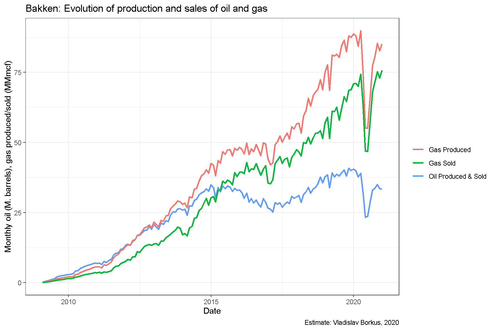

1. Много неудачных инвестиций
Отраслью было сделано крайне много неудачных инвестиций. Причем ошибки были совершены и в части ожидаемых дебитов и в части ожиданий цены нефти.

Отраслью было сделано крайне много неудачных инвестиций. Причем ошибки были совершены и в части ожидаемых дебитов и в части ожиданий цены нефти.
В ответ на кризис нефтяных цен 2014-2015 года компании сократили инвестиционную активность.

Начиная с 2016 года доходы портфелей проектов в Bakken как правило превышают все расходы, включая инвестиционные.

Новые проекты выбираются и делаются так, чтобы принести максимальный дебит в первый год работы.

Благодаря более осторожной инвестиционной политике, уровень долга портфелей проектов удалось снизить, а части компаний даже достичь некоторой долгосрочной доходности. Моделирование прекращения инвестиций “5 лет назад” в месторождение показывает, что компании смогли бы еще сильнее снизить размер долга,если бы поступили таким образом, но не смогли бы, вероятно, погасить долг полностью.


Вместе с тем долгосрочные перспективы месторождения не очень хорошие - растет как обводненность, в том числе по новым скважинам, так и происходит смещение в сторону менее прибыльной добычи газа.

